Rivalry, respect, jealousy, and the silent battlefield — a complete analysis of Love and Deepspace's male lead dynamics.
Love and Deepspace never explicitly stages a confrontation between its four male leads. But through dialogue, environmental cues, and narrative positioning, a clear relational hierarchy emerges. This is not a hierarchy of power (their Evol abilities are incomparable) but of narrative authority — who gets to set the terms of engagement with MC, and who reacts to others' actions.
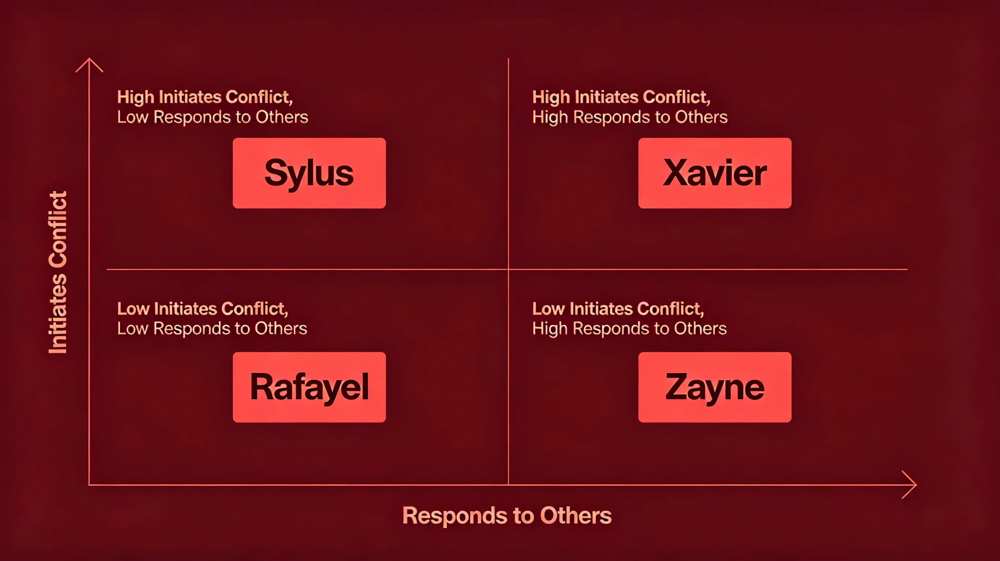
Figure 1: The narrative hierarchy — Sylus as disruptor, Xavier as constant, Zayne as gatekeeper, Rafayel as wildcard.
Image description: A four-quadrant diagram with axes: "Initiates Conflict" (vertical) and "Responds to Others" (horizontal). Each character placed in a quadrant with explanation.
The most charged relationship among the four is between Sylus (shadow/blood) and Xavier (light/sun). They are thematic opposites — light vs dark, eternal vs transient, revealed vs concealed — and their indirect clashes define much of the story's tension.
Sylus is more aggressive, more willing to claim MC publicly. Xavier is patient, waiting, believing time is on his side. The game never declares a winner — but their ideological conflict (dominance vs devotion) is the story's philosophical core.
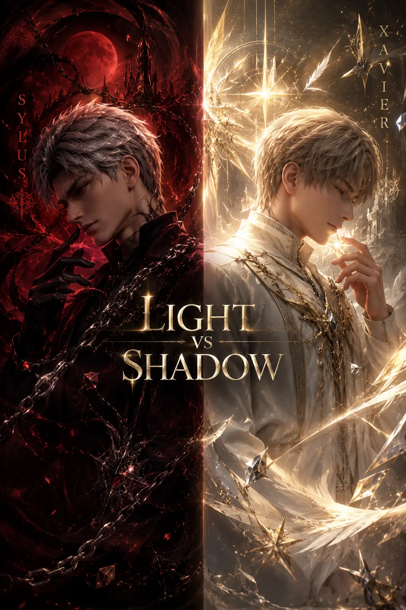
Figure 2: Visual contrast — Sylus (red/black/shadow) vs Xavier (gold/white/light). Thematic opposition in character design.
Image description: Split composition, left side Sylus in dark red and black with shadow effects, right side Xavier in gold and white with light rays. Central text "Light vs Shadow".
Where Sylus and Xavier clash over philosophy, Zayne and Rafayel clash over emotional expression. Zayne is controlled, professional, emotionally reserved. Rafayel is open, dramatic, unapologetically needy. They represent two poles of emotional availability — and MC is caught in between.
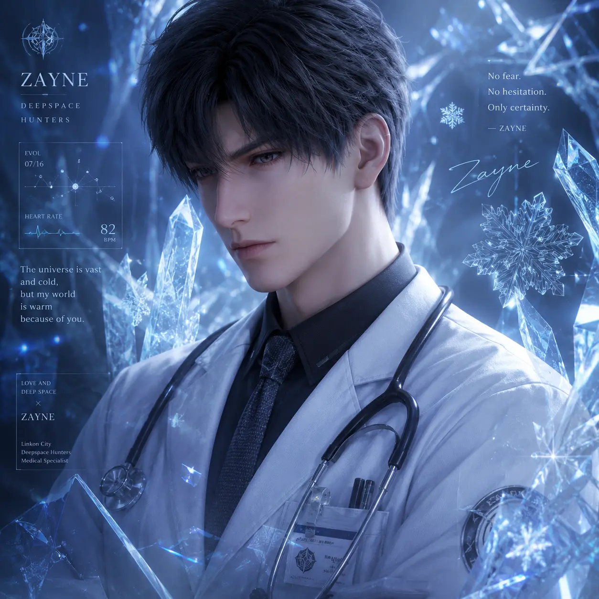
Acts of service. Silent protection. Emotion shown through action, not words. His love language is doing — cold medicine, medical care, standing guard.
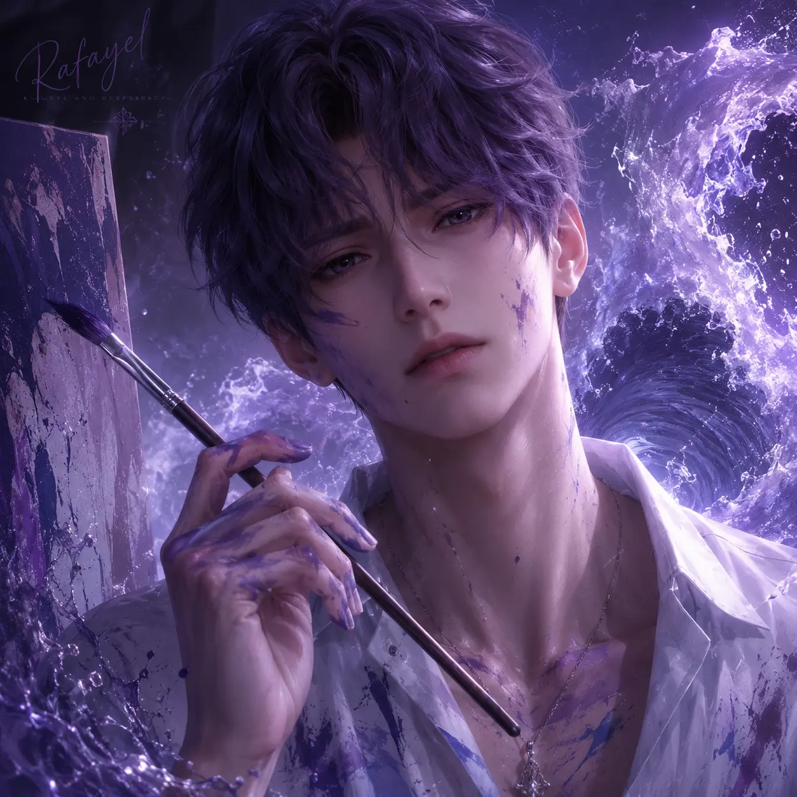
Words of affirmation. Physical touch. Emotional transparency. His love language is declaring — art, poetry, dramatic gestures.
Zayne finds Rafayel exhausting. Rafayel finds Zayne cold. Neither is wrong — they simply cannot understand the other's way of loving.
Evidence suggests yes, grudgingly. Zayne never dismisses Rafayel's skill as an artist; Rafayel never questions Zayne's medical competence. Their conflict is over style, not substance. This makes their relationship the most likely to evolve into genuine friendship — if MC weren't in the middle.
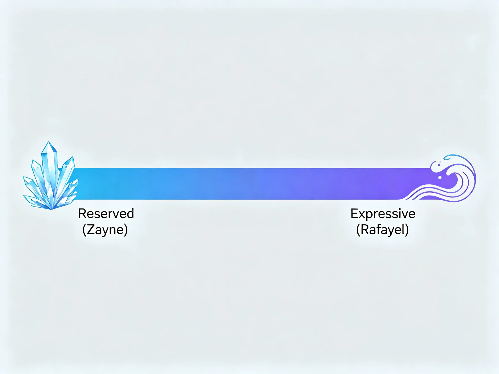
Figure 3: The emotional expression spectrum — Zayne (reserved) on one end, Rafayel (expressive) on the other.
Image description: Horizontal spectrum bar, left end labeled "Reserved (Zayne)" with ice imagery, right end labeled "Expressive (Rafayel)" with water/wave imagery.
Full four-way interactions are rare but revealing. The most significant occurs in the "Group Chat" event sequences and certain story branches where multiple leads appear in proximity. Each interaction reveals unspoken dynamics.
| Scene | Participants | Revealed Dynamic |
|---|---|---|
| Camping Catastrophe | All four | Sylus leads, Rafayel complains, Zayne prepares, Xavier observes. Each stays in character. |
| Mall Disaster | All four | Competition disguised as cooperation. Who gets to help MC first? |
| Karaoke Disaster | All four | Vulnerability exposed — singing reveals hidden emotions. |
| N109 Incidents (Group Chat) | Sylus + others | Sylus is the "outsider" the others monitor. Xavier is most suspicious. |
The in-game chat sequences are the closest we get to seeing all four interact directly. Notice who responds first, who stays silent, who deflects with humor, who changes the subject. Sylus rarely initiates but dominates when he does. Xavier is the most guarded. Zayne is the peacemaker. Rafayel is the tension-breaker — and sometimes the tension-creator.
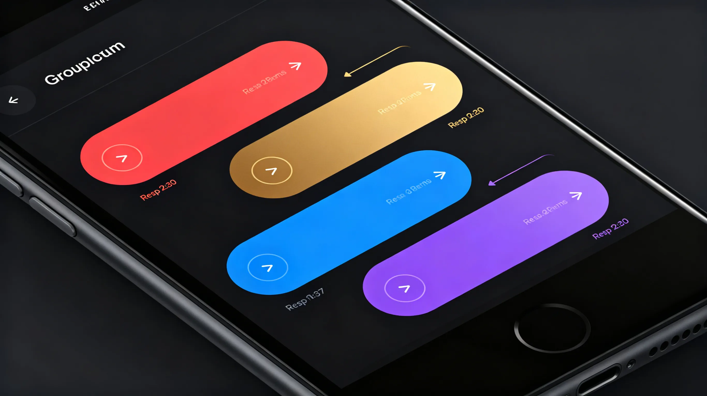
Figure 4: Group chat response patterns — who speaks first, who reacts, who goes silent.
Image description: Smartphone UI mockup showing four chat bubbles (color-coded per character), arrows showing response times and who replies to whom.
Since the game rarely has leads directly address each other, we must infer opinions from indirect evidence: how they speak of each other when the other isn't present, how their behavior changes when another lead is mentioned, and narrative framing.
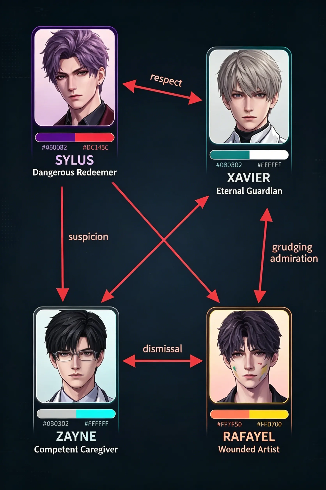
Figure 5: Inference web — each character's perceived opinion of others based on dialogue fragments.
Image description: Node-link diagram with four characters, arrows labeled with inferred attitudes ("respect", "suspicion", "dismissal", "grudging admiration").
The ultimate axis of the four-way crossfire is MC herself. Every interaction, every subtle dig, every moment of silence is filtered through the question: Who does she truly belong with — or does she belong to anyone at all?
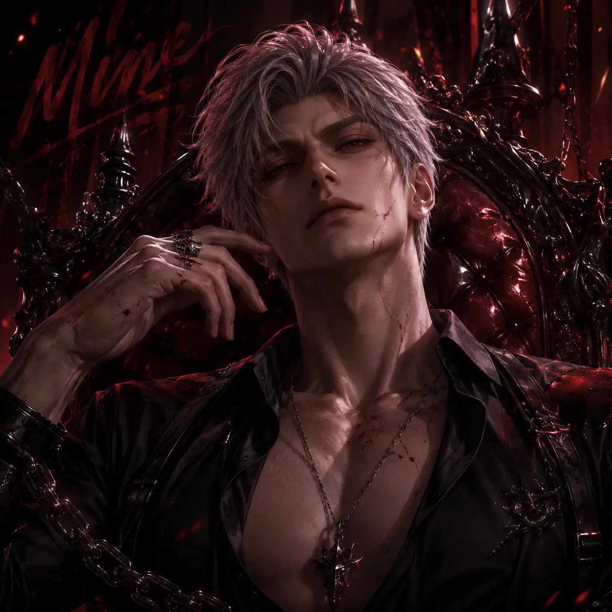
"You're mine." Not a question — a statement. His jealousy is territorial and upfront.
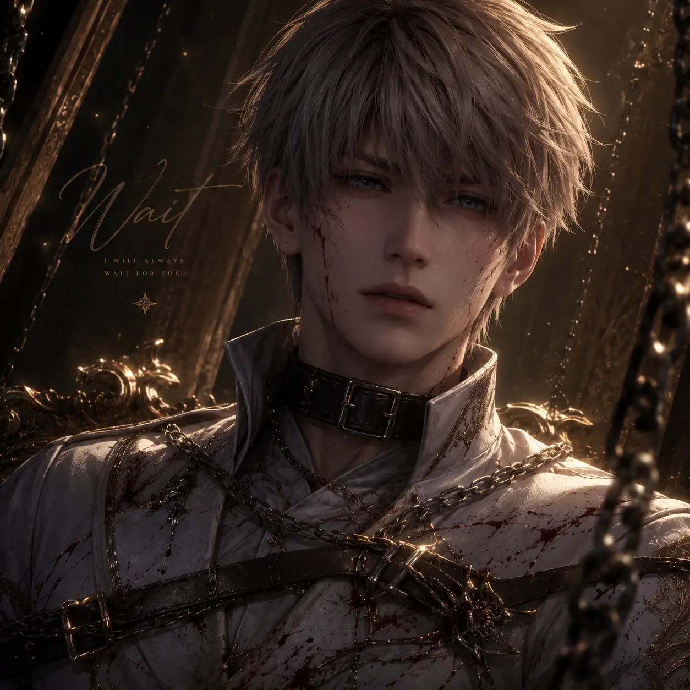
He doesn't fight for her in the moment. He waits. His jealousy is silent and patient.
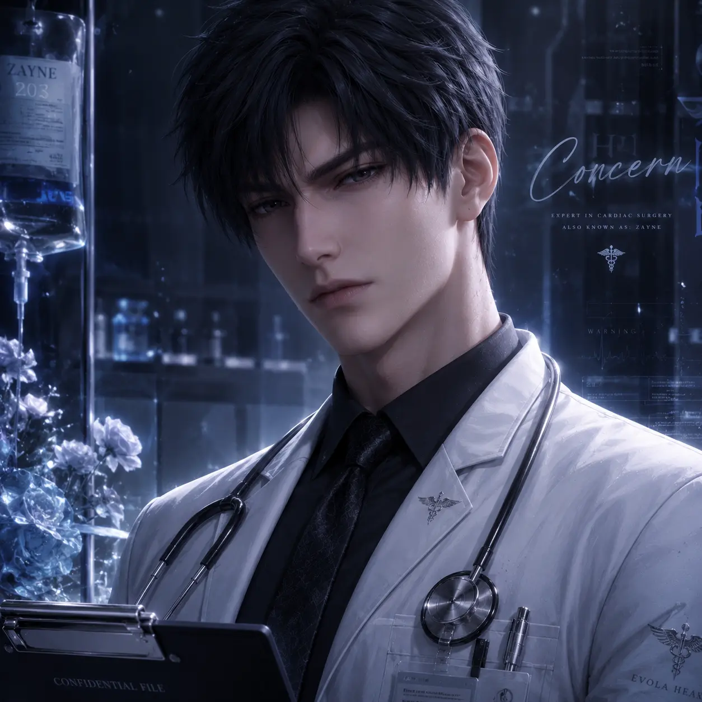
"I'm just worried about your health." His jealousy hides behind professional concern.
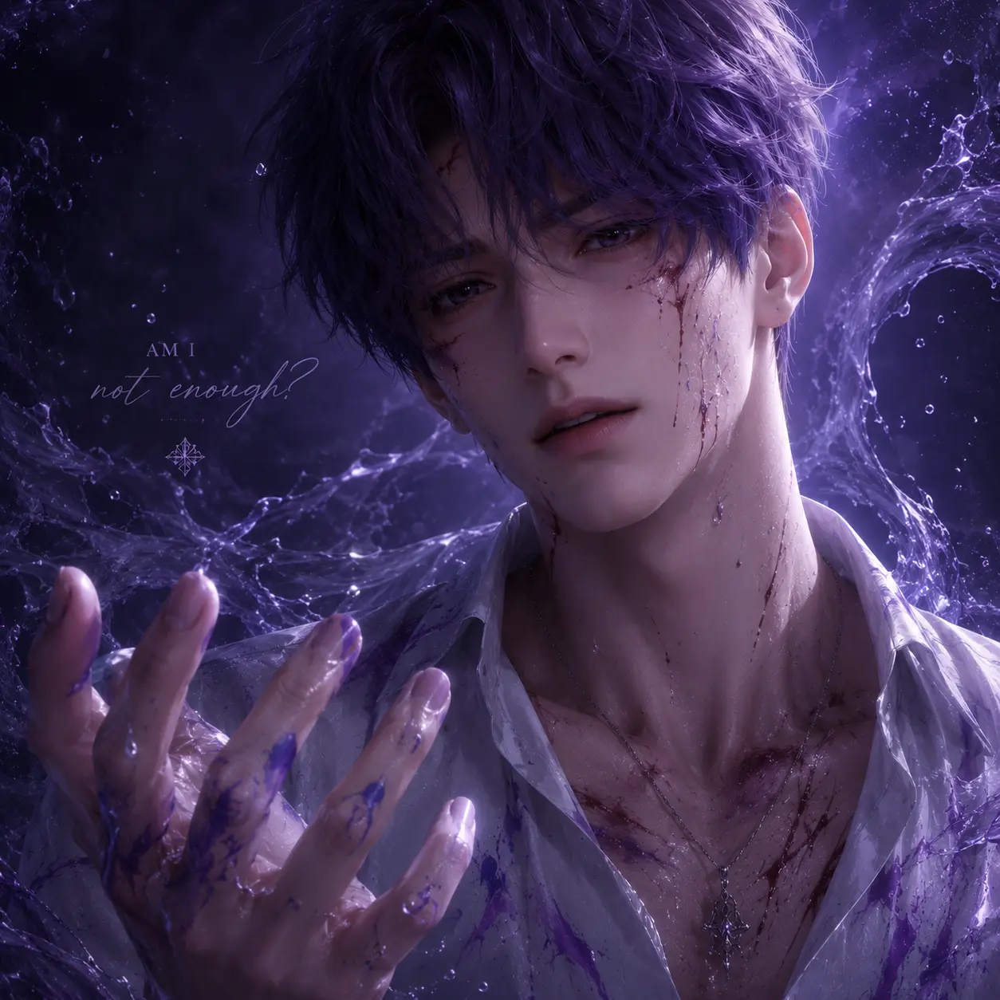
"Am I not enough?" His jealousy is open, vulnerable, designed to elicit reassurance.
The game never forces MC to choose. This is deliberate. The four-way crossfire is not meant to be resolved — it is meant to be sustained. Each lead offers a different kind of love, and the player's freedom to move between them is the game's central mechanic of desire. The jealousy, the tension, the silent competition — these are features, not bugs. They make every choice feel meaningful because every choice means rejecting three others.
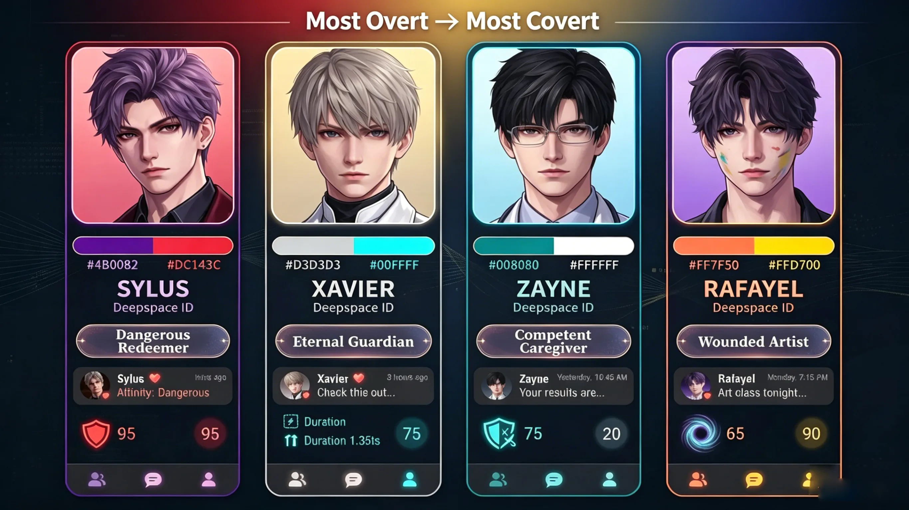
Figure 6: The four jealousy archetypes — Claimer, Withdrawer, Deflector, Wounded.
Image description: Four character portraits arranged in a spectrum from most overt jealousy (Sylus) to most covert (Xavier), with gradient arrows.
Love and Deepspace's four leads are not just rivals for MC's affection — they are philosophical alternatives. Each represents a different answer to the question "What does love look like?" Sylus answers with possession. Xavier with patience. Zayne with protection. Rafayel with expression. None is wrong. None is complete. And the game's refusal to declare a winner is its greatest narrative strength. The crossfire continues — and we, as players, are the battlefield.